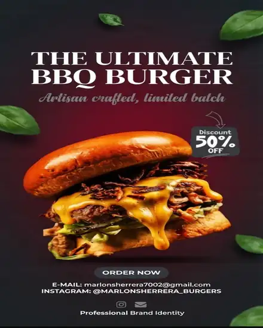
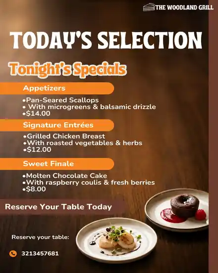
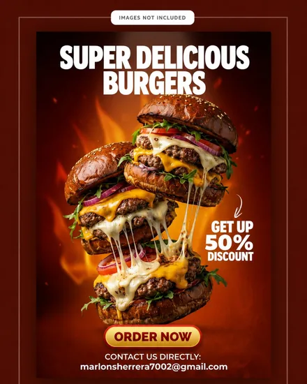

Piezas publicitarias para hamburguesería
El combo (hamburguesa + papas + bebida) es la pieza que más convierte. Priorizo fotos de cortes jugosos y queso derretido en primer plano, mucho más efectivas que una foto general del local.
Catálogo completo de servicios
Piezas publicitarias, menús digitales e identidad visual para hamburgueserías, pollo asado, perros calientes y pizza al paso. Cada pieza se construye con un solo objetivo: que tu negocio se vea profesional y venda más.
★ Mi mejor servicio
Una página web propia, programada a la medida, con botones a tus redes sociales y WhatsApp, hosting gratuito incluido y entrega lista para usar. El servicio más completo y más accesible de todo mi catálogo, desde $70.000 COP.
01 Servicios
Haz clic sobre cada servicio para ver qué incluye, para quién es ideal y qué beneficio le da a tu negocio.
Incluye: piezas publicitarias adaptadas al ritmo de la comida rápida: precio, combos y velocidad de decisión en primer plano.
Para quién: hamburgueserías, pollo asado, perros calientes y pizza al paso en Bogotá.
Beneficio: publicidad pensada para el momento exacto en que tu cliente decide comprar.
Incluye: piezas publicitarias para el feed de tu restaurante.
Para quién: negocios con Instagram activo que buscan una imagen más cuidada.
Beneficio: un perfil más profesional y mayor interacción con tus clientes.
Incluye: piezas publicitarias optimizadas para el feed de Facebook.
Para quién: restaurantes que anuncian platos, horarios o promociones.
Beneficio: más alcance y clientes que reconocen tu marca al instante.
Incluye: menú digital y carta claros y organizados, listos para compartir en celular o imprimir. Puedo integrar código QR para que tus clientes accedan al menú digital desde la mesa.
Para quién: restaurantes de comida rápida en general.
Beneficio: clientes que deciden más rápido y una imagen más profesional.
Incluye: flyer, pieza publicitaria para promociones, aperturas o eventos puntuales.
Para quién: negocios que quieren dar a conocer una oferta específica.
Beneficio: más visibilidad local con un mensaje claro para tus clientes.
Incluye: banner, pieza publicitaria para campañas digitales o punto de venta.
Para quién: restaurantes con promociones activas en redes o en el local.
Beneficio: publicidad que destaca y comunica tu oferta de forma directa.
Incluye: piezas publicitarias para descuentos, combos o fechas especiales.
Para quién: negocios que buscan aumentar ventas en fechas puntuales.
Beneficio: más pedidos y mejor aprovechamiento de cada promoción.
Incluye: identidad visual y branding para restaurantes: paleta de colores, tipografía e imagen corporativa aplicada a tus piezas publicitarias gastronómicas.
Para quién: restaurantes de comida rápida que quieren una imagen coherente en todos sus materiales.
Beneficio: una marca reconocible que transmite confianza y profesionalismo a tus clientes.
Incluye: avisos publicitarios, letreros y piezas de lanzamiento para dar a conocer la apertura de tu negocio de comida rápida en tu zona.
Para quién: negocios de comida rápida que están por abrir o inaugurar un nuevo local.
Beneficio: más gente enterada desde el primer día de apertura.
Incluye: avisos publicitarios digitales y letreros para negocio, listos para imprimir en vitrina, vallas pequeñas o pantallas dentro del local. Si buscas avisos para negocio con un diseño profesional, este es el servicio.
Para quién: negocios de comida rápida que necesitan un aviso para negocio o un letrero para negocio que se vea profesional, no artesanal.
Beneficio: un aviso publicitario para negocio que comunica tu oferta con claridad desde la calle o desde la vitrina.
02 Según tu tipo de negocio
No toda comida rápida vende igual. Así adapto cada pieza publicitaria según tu tipo específico de negocio.
El combo (hamburguesa + papas + bebida) es la pieza que más convierte. Priorizo fotos de cortes jugosos y queso derretido en primer plano, mucho más efectivas que una foto general del local.
Aquí lo que vende es el tamaño del combo familiar y cuántas personas alcanza. Programo estas piezas para domingos y días de pago, que suelen ser los de mayor movimiento.
Publicidad directa: precio y tamaño de la porción visibles de inmediato. Las promociones de horario tarde-noche suelen rendir mejor que la publicidad genérica en este tipo de negocio.
Destaco la velocidad de entrega y el precio por porción o combo, con ingredientes visibles como queso derretido o pepperoni: generan más antojo que una foto del local.
03 Guía práctica
Una buena pieza publicitaria para restaurantes de comida rápida en Bogotá no es solo un detalle estético: es una herramienta de ventas. Publicaciones claras, menús digitales bien organizados y publicidad gastronómica coherente ayudan a generar confianza a primera vista y facilitan que el cliente elija tu negocio frente a la competencia.
Los colores y las fuentes que uses en tus publicaciones, tu menú digital y tus flyers deben ser siempre los mismos. Esto hace que un cliente reconozca tu restaurante apenas ve una publicación, sin necesidad de leer el nombre.
Uno de los errores más comunes en la publicidad de restaurantes es tener una imagen en Instagram, otra en el menú impreso y otra distinta en el local. La identidad visual de tu restaurante debe sentirse igual en cualquier punto de contacto con el cliente, y es justo lo que trabajo en el branding gastronómico de cada proyecto.
04 Proceso
Así se ve el recorrido, de principio a fin, cuando trabajamos juntos.
Me escribes por WhatsApp y me cuentas qué necesita tu negocio de comida rápida.
Definimos juntos el objetivo del diseño, el estilo y los tiempos de entrega.
Trabajo en tu pieza gráfica y te comparto el avance para tu revisión.
Recibes tus archivos finales, listos para publicar o imprimir.
05 Planes
Elige el plan que más se ajuste al ritmo de publicaciones que necesita tu negocio. Los valores son desde y pueden variar según la cantidad de piezas y la complejidad del proyecto.
Desde$35.000 COP
1 pieza gráfica, 2 revisiones y entrega estándar. Ideal para una publicación o promoción puntual.
Cotizar Plan InicialDesde$70.000 COP
3 piezas gráficas, adaptaciones para Instagram y correcciones incluidas. Ideal para mantener tus redes activas todo el mes.
Cotizar Plan CrecimientoDesde$130.000 COP
Menú, flyer, publicaciones, branding básico y asesoría personalizada. Una estrategia visual completa para tu negocio.
Cotizar Plan Restaurante06 Herramienta gratuita · Paso opcional
Responde dos preguntas sobre tu negocio de comida rápida y recibe al instante una estrategia de marketing gastronómico adaptada a tu tipo de negocio y a tu objetivo principal. Es gratis, instantáneo y no necesitas escribir tu correo.
¿Necesitas algo más completo y personalizado? Llena el formulario de asesoría gratuita y recíbela por correo.
1.¿Qué tipo de comida rápida vendes?
2.¿Cuál es tu objetivo principal ahora mismo?
07 Portafolio
Cada pieza publicitaria se adapta a la marca del negocio. Estos son ejemplos del tipo de trabajo que puedes esperar; puedes ver el catálogo completo en mi Instagram y en mi perfil de Fiverr.

Este tipo de pieza se usa para anunciar combos y promociones directamente en el feed, pensada para generar pedidos el mismo día que se publica.

Se comparte por WhatsApp o se imprime en mesa con QR, para que el cliente vea el menú completo sin esperar a que lo atiendan.

Ideal para dar a conocer un local nuevo o una promoción por tiempo limitado en tu zona de Bogotá.
08 Dudas frecuentes
Con contarme tu idea, el texto y el estilo que buscas es suficiente para comenzar.
Sí, puedes solicitar varias publicaciones o piezas dentro de un mismo plan.
Sí, integro tu logo y los colores de tu marca en cada pieza publicitaria que creo.
Cada plan incluye revisiones definidas; los ajustes adicionales se cotizan aparte.
Te entrego los archivos en el formato que necesites, listos para publicar o imprimir.
Es el conjunto de colores, tipografía, fotografía y estilo que hacen reconocible tu marca en redes sociales, el menú y el local. Una identidad visual coherente genera confianza y hace que el cliente recuerde tu restaurante.
Sí. En comida rápida suele importar más la velocidad de decisión, así que las piezas destacan precio, combos y promociones de forma más directa que en un restaurante formal.
Sí, en la práctica se usan como sinónimos. Un aviso publicitario, un letrero para negocio o una pieza publicitaria cumplen la misma función: comunicar tu oferta de forma clara, ya sea en redes sociales, en vitrina o impresa dentro del local.
Sí, puedes llenar el formulario de asesoría publicitaria gratuita y recibirás por correo electrónico una recomendación inicial para tu negocio, sin costo.
Respondes dos preguntas rápidas (tipo de negocio y objetivo principal) y el asesor te muestra al instante una estrategia de marketing gastronómico adaptada a tu situación.
Hablemos de tu proyecto
Escríbeme por WhatsApp y cuéntame qué necesita tu restaurante.